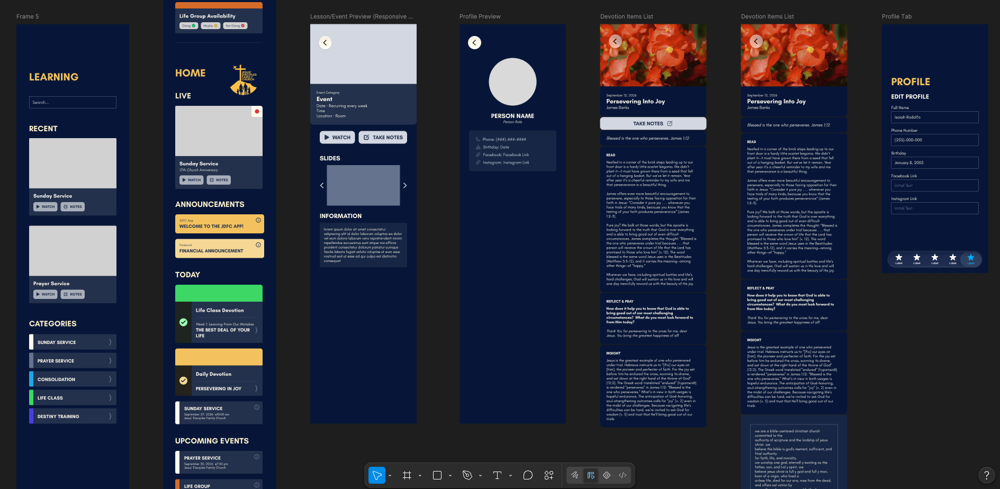
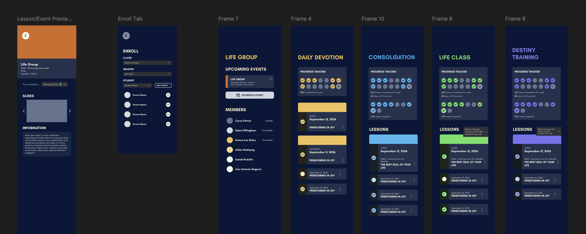
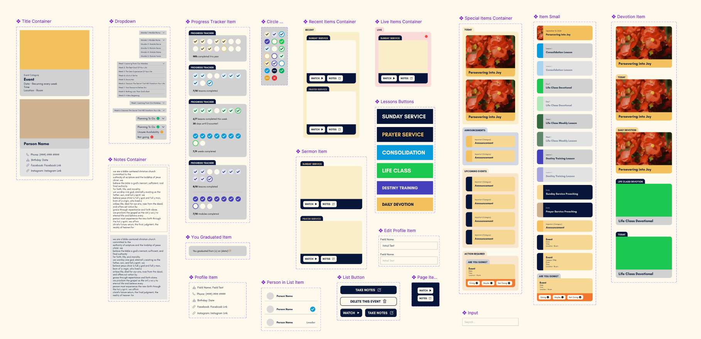
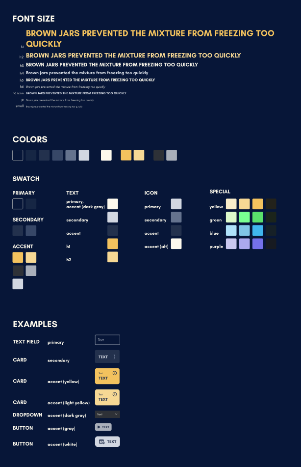

Church Organization App
Product design and development for a church education and community platform
I am leading the product development of a mobile application for my church, taking the project from stakeholder requirements and product planning through database design, UI/UX design, implementation, testing, deployment, and ongoing maintenance.
The goal of the application is to bring several existing church activities into one place, including sermons and lessons, devotionals, note-taking, events, and community resources.
Screenshots
Figma Screens, Components, & Foundations




Product Development
I work directly with church stakeholders to understand their workflows and translate their needs into product requirements, technical specifications, and user experiences. I designed the application's relational data model in Supabase/PostgreSQL and continue to develop the application's architecture and backend functionality.
The application is being built with React Native and Expo, with Supabase providing authentication, relational data, and backend functionality.
- Designed relational database models for lessons, sermons, devotionals, notes, users, events, and other application data
- Built queries and application logic for retrieving and updating user-specific content
- Implemented authentication and user-specific application state
- Developed features for sermon and lesson discovery, notes, devotionals, favorites, and progress tracking
- Designed administrative workflows for managing events, tasks, and small groups
UI/UX Design
I created the application's visual design in Figma using an established brand guide, translating the existing visual identity into a consistent mobile interface. I designed layouts, navigation, forms, cards, typography, colors, and reusable interface patterns before implementing them in the application.
I also built reusable React Native components in Storybook to establish and test the application's component system independently from the full application. This allows individual UI elements to be reviewed and refined before being integrated into larger screens.
- Created application screens and interaction flows in Figma
- Developed reusable React Native UI components
- Implemented the application's typography and visual design system
- Built and tested components in Storybook
- Iterated on layouts and interactions through UI/UX testing
Current Features
- Browse sermons and lessons and access presentation slides
- Take notes while following along with lesson slides
- Read daily devotionals and record personal reflections
- Track lesson progress and upcoming instruction dates
- Save and revisit favorite lessons
- View and participate in church events and activities
- Support administrative workflows such as event management, tasks, and small-group organization
Technology
React Native · Expo · TypeScript · Supabase · PostgreSQL · Figma · Storybook
This project is currently in active development, with continued work across product requirements, database architecture, implementation, UI/UX refinement, testing, and maintenance.